<!DOCTYPE html>
<html>
    <head>
        <title>My experiment</title>
        <script src="jspsych-6.1.0_used/jspsych.js"></script>
	<script src="https://ajax.googleapis.com/ajax/libs/jquery/1.11.1/jquery.min.js"></script>
         <script src="jspsych-6.1.0_used/plugins/jspsych-survey-text.js"></script>
         <script src="jspsych-6.1.0_used/plugins/jspsych-survey-multi-choice.js"></script>
         <script src="jspsych-6.1.0_used/plugins/jspsych-html-keyboard-response.js"></script>         
         <script src="jspsych-6.1.0_used/plugins/jspsych-html-button-response.js"></script>         
	 <script src="jspsych-6.1.0_used/plugins/jspsych-instructions.js"></script>
         <script src="jspsych-6.1.0_used/custom_plugins/jspsych-three-image-slider-response.js"></script>
	<script src="jspsych-6.1.0_used/plugins/jspsych-external-html.js"></script>
         <script src="jspsych-6.1.0_used/plugins/jspsych-image-keyboard-response.js"></script>
        <link href="jspsych-6.1.0_used/css/jspsych.css" rel="stylesheet" type="text/css"></link>
    </head>
    <body></body>
    
     
  <script>


    /* create timeline */
    N_gs = 5
    N_qs = 1
    train_trials = N_gs * N_qs
    test_trials = 2
    N_trials = test_trials + train_trials
    var N_attempts = 3;
    var attempt = 0;
    
    N_total = train_trials + test_trials
    
    
    var condition = jsPsych.randomization.sampleWithReplacement(['poscorr', 'negcorr'], 1);
    
    
    if (condition == 'poscorr'){
    train_probs = [ 102.,    3.,    2.,   13.,   10.,    2.,   13.,    3.,   13.,
          3.,    2.,    0.,    0.,    7.,    0.,    0.,    2.,    3.,
          2.,    0.,    2.,    0.,    1.,    2.,    0.,    0.,   13.,
         13.,    0.,    0.,    2.,    1.,    0.,    2.,    0.,    2.,
         10.,    7.,    1.,    1.,   22.,    1.,    1.,    7.,   10.,
          2.,    0.,    2.,    0.,    1.,    2.,    0.,    0.,   13.,
         13.,    0.,    0.,    2.,    1.,    0.,    2.,    0.,    2.,
          3.,    2.,    0.,    0.,    7.,    0.,    0.,    2.,    3.,
         13.,    3.,   13.,    2.,   10.,   13.,    2.,    3.,  102.]
    } else if (condition == 'negcorr'){
    
    train_probs = [  13.,    3.,   13.,    2.,   10.,   13.,    2.,    3.,  102.,
          3.,    2.,    0.,    0.,    7.,    0.,    0.,    2.,    3.,
         13.,    0.,    0.,    2.,    1.,    0.,    2.,    0.,    2.,
          2.,    0.,    2.,    0.,    1.,    2.,    0.,    0.,   13.,
         10.,    7.,    1.,    1.,   22.,    1.,    1.,    7.,   10.,
         13.,    0.,    0.,    2.,    1.,    0.,    2.,    0.,    2.,
          2.,    0.,    2.,    0.,    1.,    2.,    0.,    0.,   13.,
          3.,    2.,    0.,    0.,    7.,    0.,    0.,    2.,    3.,
        102.,    3.,    2.,   13.,   10.,    2.,   13.,    3.,   13.]
    }
    
    test_probs = [   0.,    0.,    0.,    0.,    3.,    0.,    0.,    0.,    0.,
          0.,    3.,    0.,    3.,   10.,    3.,    0.,    3.,    0.,
          0.,    0.,    0.,    0.,    3.,    0.,    0.,    0.,    0.,
          0.,    3.,    0.,    3.,   10.,    3.,    0.,    3.,    0.,
          3.,   10.,    3.,   10.,  333.,   10.,    3.,   10.,    3.,
          0.,    3.,    0.,    3.,   10.,    3.,    0.,    3.,    0.,
          0.,    0.,    0.,    0.,    3.,    0.,    0.,    0.,    0.,
          0.,    3.,    0.,    3.,   10.,    3.,    0.,    3.,    0.,
          0.,    0.,    0.,    0.,    3.,    0.,    0.,    0.,    0.]
        
    var graphs0 = []    
    for (var i = 1; i < 82; i++) {
    if (i < 10) {
        graphs0 = graphs0.concat('Slide0' + i);
        } else{
        graphs0 = graphs0.concat('Slide' + i);
        }
          
    }   
    var train_graphs = jsPsych.randomization.sampleWithReplacement(graphs0, 500, train_probs).slice(start = 0, end = train_trials);
    
    var test_graphs = jsPsych.randomization.sampleWithReplacement(graphs0, 500, test_probs).slice(start = 0, end = test_trials);
    
    graphs = train_graphs.concat(test_graphs)
    
        
    var all_queries = []    
    for (var i = 1; i < 10; i++) {
          all_queries = all_queries.concat('draw_querys/Slide0' + i);
        }
    for (var i = 10; i < 55; i++) {
          all_queries = all_queries.concat('draw_querys/Slide' + i);
        }
	
    var biased_all_queries = []
    var q_indices = [03, 05, 09, 15, 17, 21, 23, 27, 33, 35, 04, 06, 10, 16, 18, 22, 24, 28, 34, 36]
    console.log(q_indices)
    for (var i = 0; i < 60; i++) {
	  q_i = i%20; 
	  q_n = q_indices[q_i];
          if (q_n < 10){
	  biased_all_queries = biased_all_queries.concat('draw_querys/Slide0' + q_n);
	  }
	  else {
	  biased_all_queries = biased_all_queries.concat('draw_querys/Slide' + q_n);
	  }
	  console.log(biased_all_queries)
        }

    biased_all_queries = biased_all_queries.concat(all_queries)

    
    var reps = 1 + N_trials / 54;
    var train_l_queries = jsPsych.randomization.repeat(all_queries, reps).slice(start = 0, end = train_trials);
    var test_l_queries = jsPsych.randomization.repeat(biased_all_queries, reps).slice(start = 0, end = test_trials);
    var l_queries = train_l_queries.concat(test_l_queries)
    
    var r_queries = []
    var new_index = 0
    for (var i = 0; i < N_trials; i++) {
          index = parseInt(l_queries[i].slice(start = 17, end = 20));
	  if (index % 2){
		new_index = index + 1;
	} else {
		new_index = index - 1;
	}
		
	  if (new_index < 10){
		  r_queries = r_queries.concat('draw_querys/Slide0' + new_index);
        } else{
		  r_queries = r_queries.concat('draw_querys/Slide' + new_index);
	}
	  
        }
	
    
    var timeline = [];
    
    var intro = {
      type: "survey-text",
      choices: ["Continue"],
      preamble: "<p> This study is part of a research project conducted by " +
                "Samuel Gershman, Harvard University.</p>"+
                "<p> We want to examine people's intuitions about causes and effects.</p>" +
              "<p>Please enter your MTurk ID and press continue to begin.</p>",
	      
  questions: [
    {prompt: "MTurk ID", name: 'ID', rows: 2, columns: 40, required: true},
     ],
    };
    timeline.push(intro);
    
    
    // consent

	var check_consent = function(elem) {
		if ($('#consent_checkbox').is(':checked')) {
			return true;
		}
		else {
			alert("If you wish to participate, you must check the box.");
			return false;
		}
		return false;
	};
	
	var consent_block = {
		type:'external-html',
		url: "consent-causal.html",
		cont_btn: "start",
		check_fn: check_consent
	};

    timeline.push(consent_block)
	
    var instructions = {
      type: "instructions",
      pages: [
        'Welcome to the experiment. Click next to continue to the instructions.',
        
	'In this experiment, you will be playing the role of a doctor trying to judge the effects of toxins on a disorder. This will test your intuitions about cause and effect. <br>',
	
	
	'There are two kinds of toxins (X and Y). They can both cause a disorder D. <br>'+
        'X causes D is represented with a link from X to D as follows: <br> </img><br> ' +
        'Both X and Y can independently cause disorder D. This is indicated as follows: <br>'+
        '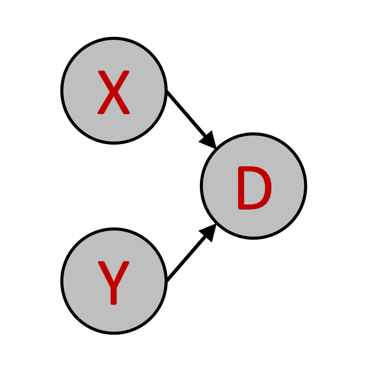</img><br>'+
        'If both toxins (X and Y) are present, then D is more likely to occur than if only one or none of the toxins are present.<br> ',
	
        'The presence of a toxin (X or Y) does not guarantee that the disorder D will occur. <br> It only increases the probability that D will occur. <br>'+ 
        'How much this probability increases is determined by the <b>strength of the link between the toxin and the disorder</b>. <br> The strength of this link can vary from individual to individual, depending on their sensitivities to the different toxins. <br>This strength is indicated by the type of arrow between the toxin and the disorder. ',
        
        'The three kinds of causal links between toxin and disorder are: <br> 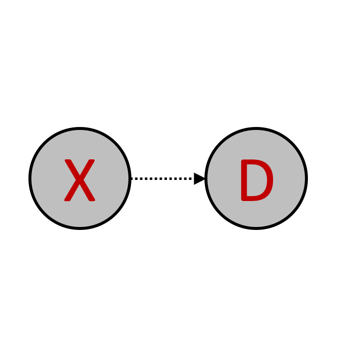</img> <b>Weak</b> link. <br> Everytime the toxin occurs, the disorder has a <b>20%</b> probability of ocurring.'+
        '<hr> </img> <b>Moderate</b> link. <br>Everytime the toxin occurs, the disorder has a <b>50%</b> probability of ocurring.' +
        '<hr> 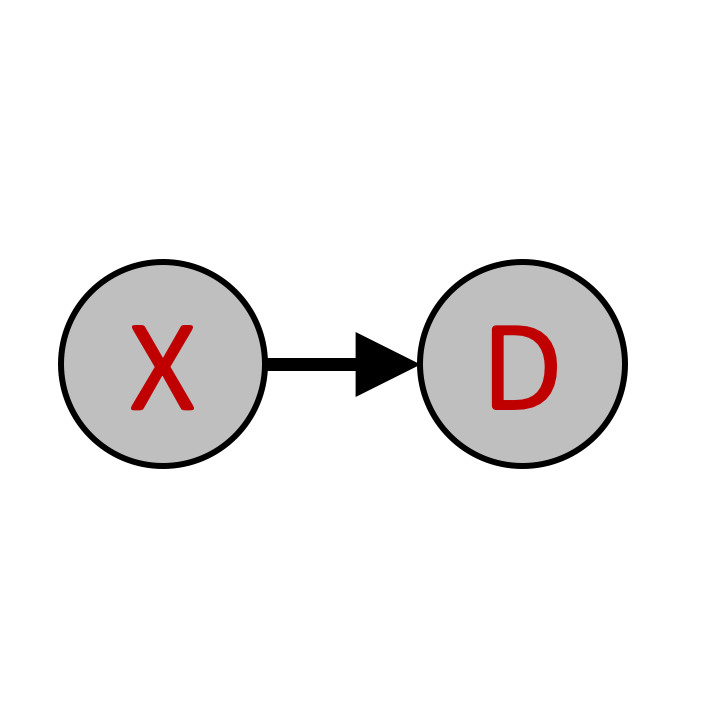</img> <b>Strong</b> link.<br> Everytime the toxin occurs, the disorder has a <b>80%</b> probability of ocurring. <br>'+
	'<br> Toxin Y can also weakly, moderately, or strongly cause the disorder D, and is indicated by the same three kinds of arrows.',
        
        'The strength of causal links can be <b>mixed</b> for the same individual, for example:'+
        '<br> 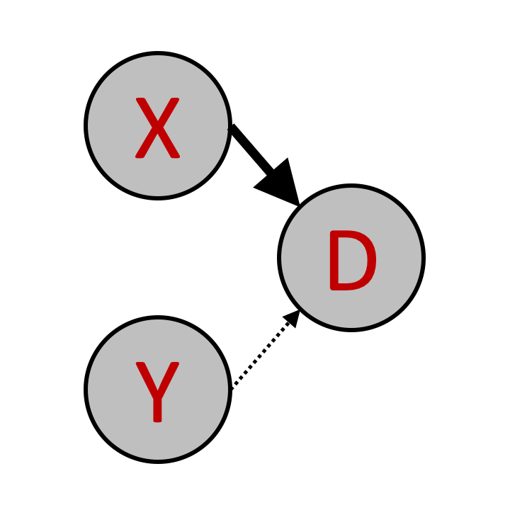</img> <br> Indicates <b> in this individual, toxin X strongly causes the disorder D </b> and <b> toxin Y only weakly causes the disorder D </b>. <br>',
         
         'The two toxins (X and Y) do not always occur. Different individuals also have different levels of exposure to these two toxins. <br>'+
         
        'The <b>probability of each toxin</b> occurring is independent, and is indicated by <br> the type of arrows pointing to it.', 
        
        'The three types of arrows have similar meanings here : <br> 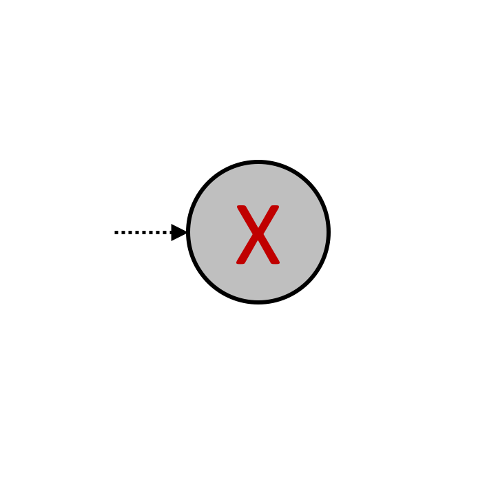</img> <b>Weak</b> probability of occurrence. <br> The toxin has a <b>20%</b> probability of occurring.<hr>'+
        '</img> <b>Moderate</b> probability of occurrence. <br> The toxin has a <b>50%</b> probability of occurring.<hr>' +
        '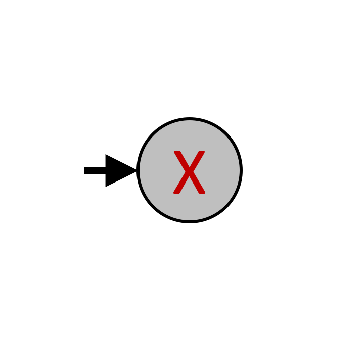</img> <b>Strong</b> probability of occurrence. <br> The toxin has a <b>80%</b> probability of occurring. <br>'+
	'<br> Toxin Y also has strong, moderate or weak probability of occurrence, and is indicated by the same three kinds of arrows.',
        
        'The probabilities of the two different toxins can be <b>mixed</b> in the same individual, for example:'+
        '<br> 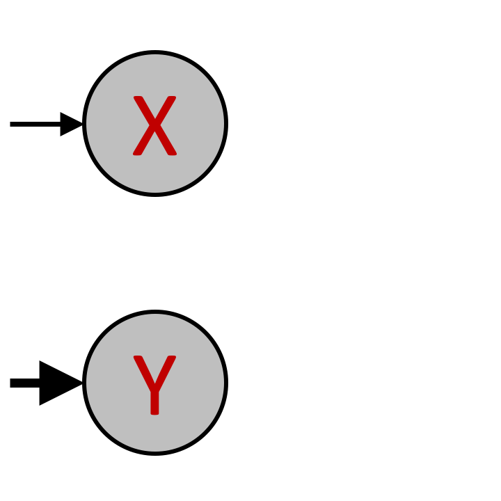</img> <br> Indicates that <b> toxin X is moderately likely to occur </b>  while <b> toxin Y is strongly likely. </b> <br>',
        
        'Finally, the disorder D can sometimes occur (with a <b>20%</b> probability) even when neither of the toxins (X, Y) is present. <br> <b>This remains the same across all individuals </b>, and is shown by the weak arrow pointing to D: <br> 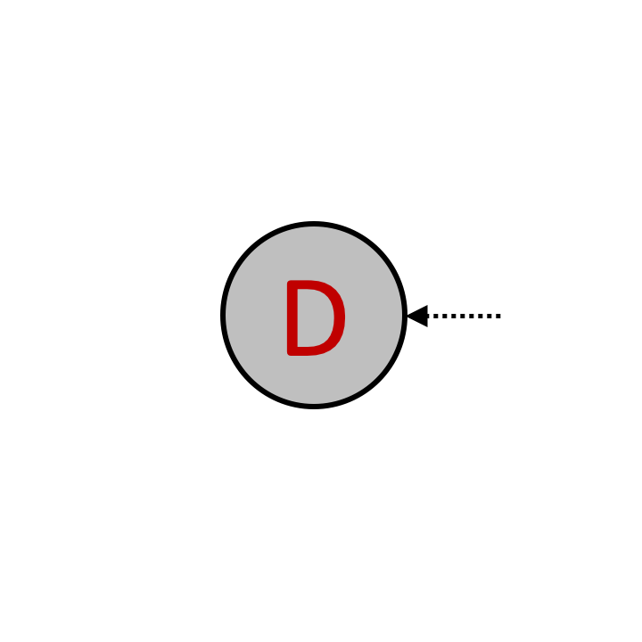</img> <br>',
        
        'You will see <b>"causal structures"</b> for different individuals. Individuals vary along two dimensions. First, in how sensitive they are to the different toxins X and Y. This is reflected in different strengths of the causal link between toxin and disorder. Second, they vary in how much exposure they have had to the toxins. This is reflected in how likely the two toxins are to occur. <br> An example causal structure you might see in this experiment is: <br> 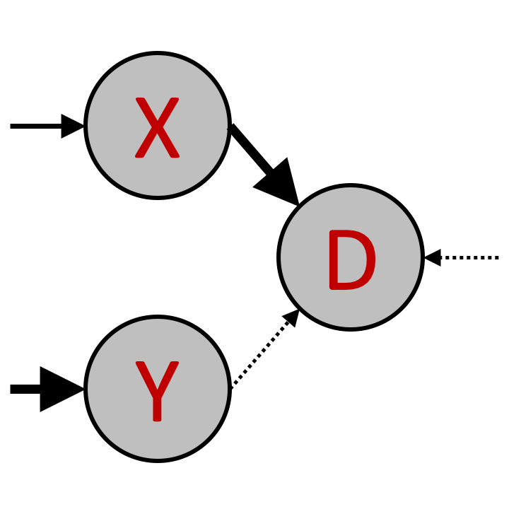</img> <br> <br>'+
        
        'Given this, you will have to make judgments about the probability that the toxins X and Y, or the disorder D, are present. <br> This is described in the next section.',
	
	 'You will be shown two images of possible states, like the one below: <br> <br>'+
        '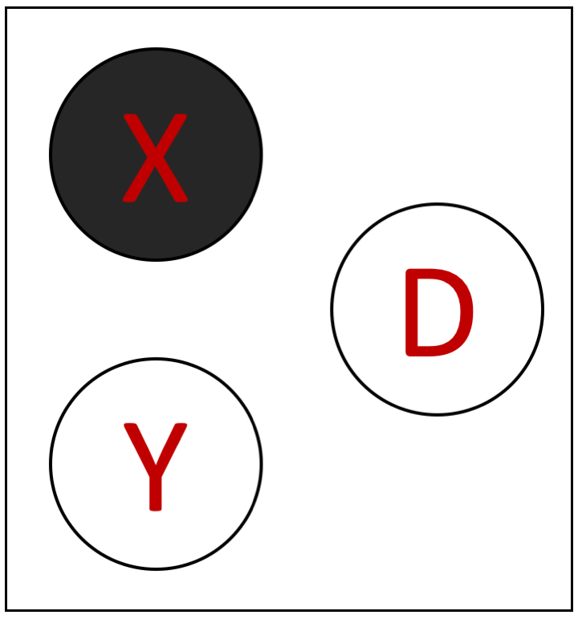</img>  <br> <br>'+
        '<b>Black indicates that a variable ocurred, white indicates it did not occur.</b><br>'+
	'In this example, therefore, the toxin X was found to be present, while toxin Y was absent. Disorder D was also absent. <br>'+
        'Your task is to guess which of two displayed states is more likely, given your knowledge of the "causal structure" for that individual. <br>'+
	'You will see 50 such trials',
	
	
        'We first go through a few examples.',
        
        'For an individual with causal structure : 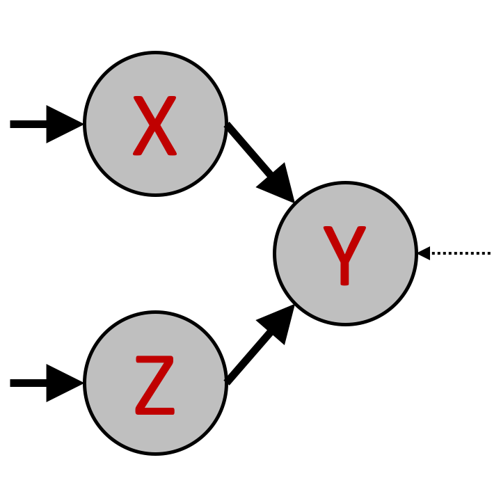</img> <br>'+
        '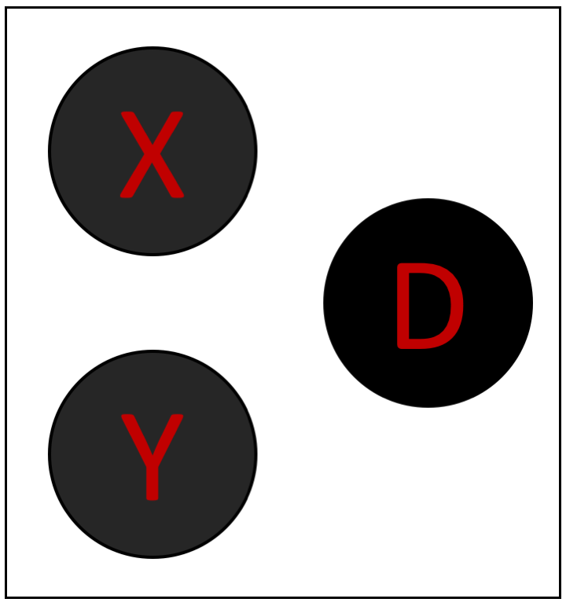</img> is much more probable than 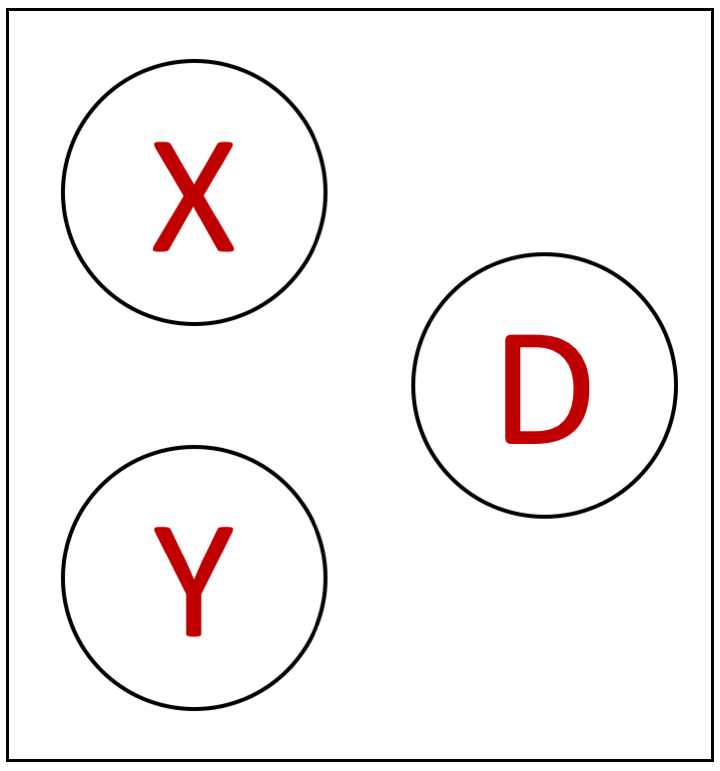</img>',
        
        
        'For an individual with causal structure : </img> <br>'+
        '</img> is more probable than </img>, <br> but they are both less probable than 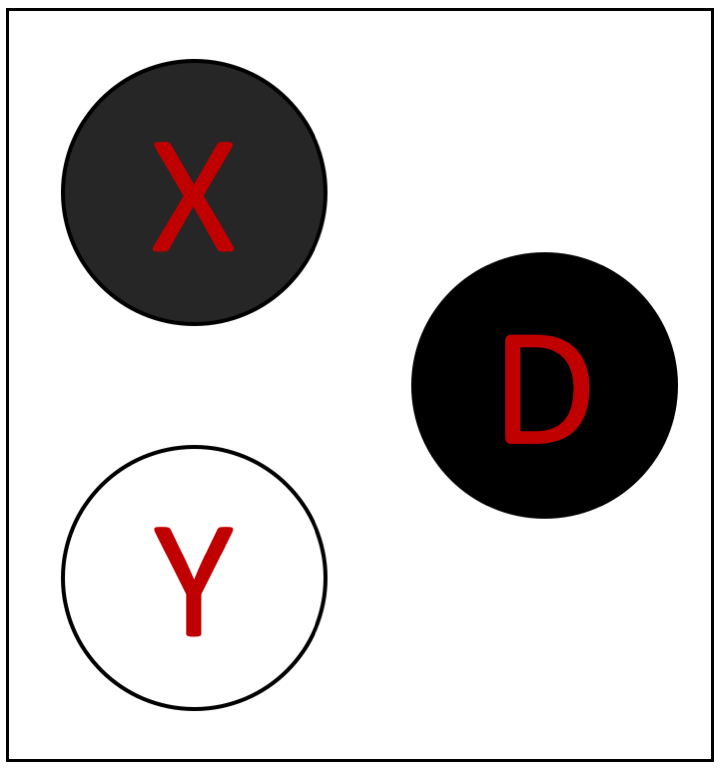</img>',
	
	'Sometimes, you will not have to reason about the probabilities of all three variables (X, Y and D) but only some subset of them. For example: <br> <br>'+
        '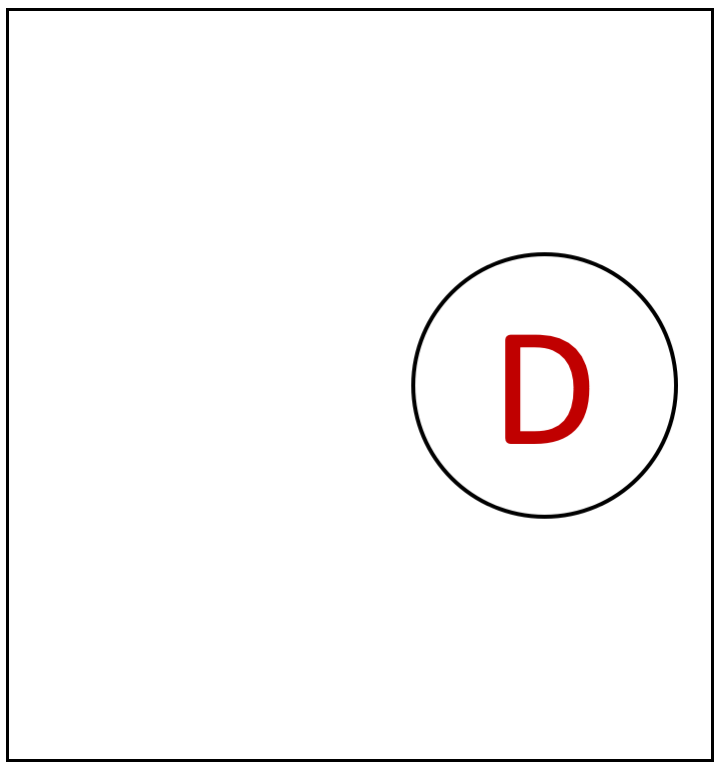</img>  <br> <br>'+
	'Here, we do not know anything about whether the toxins X and Y were present, we just know that the disorder D did not occur. <br>',
        
        'For an individual with causal structure : </img> <br>'+
	'Even if we do not know for sure whether the toxins were present, we know they are likely to occur, and that when they occur, they strongly cause the disorder D <br>'+
        'Therefore, this individual is very likely to have the disorder overall, and 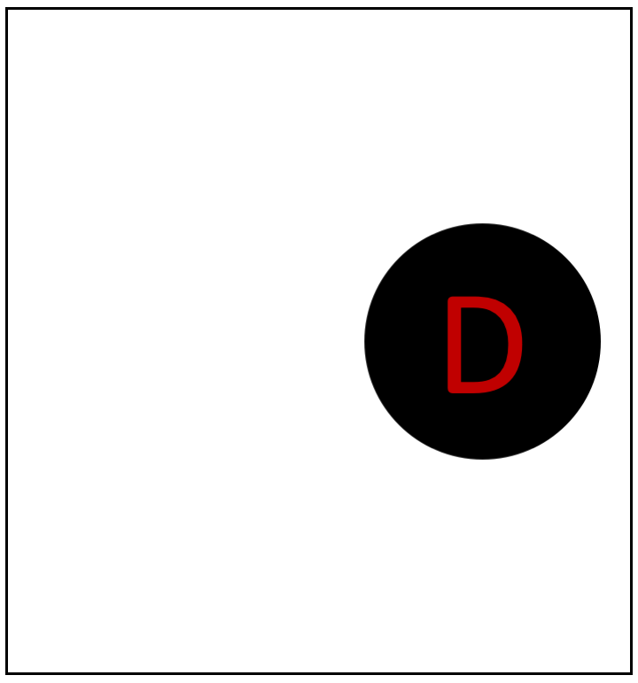</img> is much more probable than </img>',

	
        'Once you enter the experiment, you will first see only the causal structure for an individual for 2 seconds.<br> Please use this time to think about what the probabilities of different states might be. <br> <br> Two causal states will then appear, and you will have to enter your judgment of which you think is more likely, on a slider. <br> The slider goes from 0 on the left to 100 on the right, and will start in the middle at 50. Where you place your slider determines how likely you think the states are compared to each other. More to the left means that you think the left state is more likely. More to the right means that you think the right state is more likely. For example, if you think the right state is going to occur 20% of the time, and the left state will occur 80% of the time, then you should place the slider close to the left side, at 20. <br> Please take into account all the factors in the causal structure (the <b>strengths of the causal links between toxin and disorder</b>, as well as <b>the probability of a toxin occurring</b>) when making your judgment, and try to be as accurate as possible.<br>',
        
        'On the next page you will see a few comprehension questions. <br> You will not be able to progress to the experiment until you answer the questions correctly. <br> If you answer incorrectly you will be redirected to a summary of the instructions. <br> You will get 3 attempts to answer the comprehension questions correctly.<br> '
    ],
    show_clickable_nav: true
    };
    
    timeline.push(instructions);
    
    
    var comprehension = {
      type: 'survey-multi-choice',
      preamble: '<b><u>Please answer the following comprehension questions</u></b>', 
      button_label: 'Submit',
      questions: [
        {prompt: "If a toxin is present, then the disorder D will always occur", name: 'prob_c', options: ['True', 'False'], required:true, horizontal: true}, 
        {prompt: "What are the kinds of causal links between toxin and disorder?", name: 'types', options: ['Strong and very strong', 'Moderate, weak and very weak', 'Weak, moderate, and strong', 'Weak and strong'], required:true, horizontal: true},
        {prompt: "If a toxin does not occur, then the disorder cannot occur", name: 'prob_e', options: ['True', 'False'], required:true, horizontal: true}, 
        {prompt: "A black background in a state means that variable (toxin or disorder) did occur.", name: 'bg', options: ['True', 'False'], required:true, horizontal: true},
        {prompt: "What is your task in this experiment?", name: 'task', options: ['To judge the probability of individual causal structures', 'To judge how probable the toxin X is', 'To judge the probability of toxins and disorders occurring, given an individual causal structure'], required:true},
      ],
    };
    
    timeline.push(comprehension);
    
    
    function right_answers2(q1, q2, q3, q4, q5){
    right = (q1 && q2 && q3 && q4 && q5);
    return right;
    }
    
    
    function right_answers(data){
    q1 = data['prob_c'] == 'False';
    q2 = data['types'] == 'Weak, moderate, and strong';
    q3 = data['prob_e'] == 'False';
    q4 = data['bg'] == 'True';
    q5 = data['task'] == 'To judge the probability of toxins and disorders occurring, given an individual causal structure';
    right = (q1 && q2 && q3 && q4 && q5);
    return right;
    }
    
    
     var success = {
      type: "html-button-response",
      choices: ["Continue"],
      stimulus: "You have answered the comprehension questions correctly! <br>"+
              "<p>Press continue to begin the experiment.</p>",
    };
    
     var failure = {
      type: "html-button-response",
      choices: ["Continue"],
      stimulus: 'You have not answered the comprehension questions correctly. <br>'+
              'Press continue to go to the instructions again.',
    };
    
    
    var short_instructions = {
      type: "instructions",
      pages: [
        
        
        'In this experiment, you will be playing the role of a doctor trying to judge the effect of a toxin on the presence of a disorder. This will test your intuitions about cause and effect. <br><hr> <hr>' +
	
	
	'There are two kinds of toxins (X and Y) that can cause a disorder D.<br>'+
        'X causes D is represented with a link from X to D as follows: <br> </img><br> ' +
        'Both X and Y can independently cause disorder D. This is indicated as follows: <br>'+
        '</img><br>'+
        'If both toxins (X and Y) are present, then D is more likely to occur than if only one or none of the toxins are present.<br> <hr> <hr>' +
	
        'The presence of a toxin (X or Y) does not guarantee that the disorder D will occur. <br> It only increases the probability that D will occur.<br>'+ 
        'How much this probability increases is determined by the <b>strength of the link between the toxin and the disorder</b>. <br> The strength of this link can vary from individual to individual, depending on their sensitivities to the different toxins. <br>This strength is indicated by the type of arrow between the toxin and the disorder. <hr> <hr>' +
        
        'The three kinds of causal links between toxin and disorder are: <br> </img> <b>Weak</b> link. <br> Everytime the toxin occurs, the disorder has a <b>20%</b> probability of ocurring.'+
        '<hr> </img> <b>Moderate</b> link. <br>Everytime the toxin occurs, the disorder has a <b>50%</b> probability of ocurring.' +
        '<hr> </img> <b>Strong</b> link.<br> Everytime the toxin occurs, the disorder has a <b>80%</b> probability of ocurring. <br>'+
	'<br> Toxin Y can also weakly, moderately, or strongly cause the disorder D, and is indicated by the same kinds of arrows as above.<hr> <hr>' +
        
        'The strength of causal links can be <b>mixed</b> for the same individual, for example:'+
        '<br> </img> <br> Indicates <b> in this individual, toxin X strongly causes the disorder D </b> and <b> toxin Y only weakly causes the disorder D </b>. <br><hr> <hr>' +
         
         'The two toxins (X and Y) also do not always occur. Different individuals have different levels of exposure to these two toxins, and the toxins therefore have different probabilities of occurring. <br>'+
         
	'The <b>probability of each toxin</b> occurring is independent, and is indicated by <br> the type of arrows pointing to it.<hr> <hr>' + 
        
        'The three types of arrows have similar meanings here : <br> </img> <b>Weak</b> probability of occurrence. <br> The toxin has a <b>20%</b> probability of occurring.<hr>'+
        '</img> <b>Moderate</b> probability of occurrence. <br> The toxin has a <b>50%</b> probability of occurring.<hr>' +
        '</img> <b>Strong</b> probability of occurrence. <br> The toxin has a <b>80%</b> probability of occurring. <br>'+
	'<br> Toxin Y also has strong, moderate or weak probability of occurrence, and is indicated by the same kinds of arrows as above.<hr> <hr>' +
        
        'The probabilities of the two different toxins can be <b>mixed</b> in the same individual, for example:'+
        '<br> </img> <br> Indicates that <b> toxin X is moderately likely to occur </b>  while <b> toxin Y is strongly likely. </b> <br><hr> <hr>' +
        
        'Finally, there is some <b> additional noise</b>. <br>'+
        'The disorder D can sometimes occur (with a <b>20%</b> probability) even when neither of the toxins (X, Y) is present. <br> <b>This remains the same across all individuals </b>, and is shown by the weak arrow pointing to D: <br> </img> <br><hr> <hr>' +
        
        'You will see <b>"causal structures"</b> for different individuals. Individuals vary along two dimensions. First, in how sensitive they are to the different toxins X and Y. This is reflected in different strengths of the causal link between toxin and disorder. Second, they vary in how much exposure they have had to toxins X and Y. This is reflected in how likely the two toxins are to occur. <br> An example causal structure you might see in this experiment is: <br> </img> <br> <br>'+
        
        'Given this, you will have to make judgments about the probability that the toxins X and Y, or the disorder D, are present. <br> This is described in the next section.<hr> <hr>' +
	
	 'You will be shown two images of possible states, like the one below: <br> <br>'+
        '</img>  <br> <br>'+
        '<b>Black indicates that a variable ocurred, white indicates it did not occur.</b><br>'+
	'In this example, therefore, the toxin X was found to be present, while toxin Y was absent. Disorder D was also absent. <br>'+
        'Your task is to guess which of two displayed states is more likely, given your knowledge of the "causal structure" for that individual. <br><hr> <hr>' +
	
	
        'We first go through a few examples.<hr> <hr>' +
        
        'For an individual with causal structure : </img> <br>'+
        '</img> is much more probable than </img><hr> <hr>' +
        
        
        'For an individual with causal structure : </img> <br>'+
        '</img> is more probable than </img>, <br> but they are both less probable than </img><hr> <hr>' +
	
	'Sometimes, you will not have to reason about the probabilities of all three variables (X, Y and D) but only some subset of them. For example: <br> <br>'+
        '</img>  <br> <br>'+
	'Here, we do not know anything about whether the toxins X and Y were present, we just know that the disorder D did not occur. <br><hr> <hr>' +
        
        'For an individual with causal structure : </img> <br>'+
	'Even if we do not know for sure whether the toxins were present, we know they are likely to occur, and that when they occur, they strongly cause the disorder D <br>'+
        'Therefore, this individual is very likely to have the disorder overall, and </img> is much more probable than </img><hr> <hr>' +

	
        'Once you enter the experiment, you will first see only the causal structure for an individual for 2 seconds.<br> Please use this time to think about what the probabilities of different states might be. <br> <br> Two causal states will then appear, and you will have to enter your judgment of which you think is more likely, on a slider. <br> The slider goes from 0 on the left to 100 on the right, and will start in the middle at 50. Where you place your slider determines how likely you think the states are compared to each other. More to the left means that you think the left state is more likely. More to the right means that you think the right state is more likely. For example, if you think the right state is going to occur 20% of the time, and the left state will occur 80% of the time, then you should place the slider close to the left side, at 20.<br>'+
	
	'Please take into account all the factors in the causal structure (the <b>strengths of the causal links between toxin and disorder</b>, as well as <b>the probability of a toxin occurring</b>) when making your judgment, and try to be as accurate as possible.<br><hr> <hr>' +
	
        '<b>You will have to answer a few comprehension questions on the next page before starting the experiment. </b>'
    ],
    show_clickable_nav: true
    };
    
    
    
    
    var pass_test = false;
    for (attempt = 0; attempt < N_attempts - 1; attempt++){
	N_left = N_attempts - attempt
	
        var comp_if_node = {
            timeline: [failure, short_instructions, comprehension],
            conditional_function: function(){
                var data = jsPsych.data.get().last(1).values()[0]['responses'];
		/*document.getElementById("answers").innerHTML = data*/
                if(right_answers(JSON.parse(data))){
			pass_test = true
                    return false;
                } else {
                    return true;
                }
            }
        }
	timeline.push(comp_if_node);
	
    };


    /* test trials  */
    
    var all_test_trials = []
    all_test_trials.push(success)
    
    for (var trial = 0; trial < N_trials; trial++){
    
        var view_trial = { 
          type: "image-keyboard-response",
          stimulus: 'draw_stimuli/'+graphs[trial]+'.png',
          stimulus_height: 300,
          choices: jsPsych.NO_KEYS, 
          trial_duration: 2000,
          }
          
        all_test_trials.push(view_trial);

        var response_trial = {
          type: "three-image-slider-response",
          stimulus_height: 300,
          resp_stimulus_height: 120,
          max: 100,
	  trial_number: trial + 1,
	  total_trial_number: N_trials,
          labels: ['0', '100'],
	  prompt: 'Slider to the left means left state is more likely, and vice versa. <br>',
          start: 50,
          button_label: 'Submit',
          require_movement: true,   
          stimulus: 'draw_stimuli/'+graphs[trial]+'.png',
	  left_resp_stimulus: l_queries[trial]+'.png',
          right_resp_stimulus: r_queries[trial]+'.png',
          data: {"condition": condition, 
		'stimulus': graphs[trial], 
		'left_resp_stimulus': l_queries[trial]+'.png',
		'right_resp_stimulus': r_queries[trial]+'.png'},
          }
    
        all_test_trials.push(response_trial);
      
    };
    
    
     var eoe_pass = {
      type: "html-button-response",
      choices: ["Continue"],
      stimulus: "This is the end of the questions about causal structure. <br>Press continue to go to the debriefing and feedback section. <br>",
    };
    
    all_test_trials.push(eoe_pass)
    
     var eoe_fail = {
      type: "html-button-response",
      choices: ["Exit"],
      stimulus: "You have used up all "+ N_attempts + " attempts to answer comprehension. <br> The experiment is over, press the button to exit. <br>",
    };


	// debriefing
	var debrief_block = {
			type: 'external-html',
			url: 'debrief.html',
			cont_btn: "Continue"
	};

	// function to save data
	function saveData(filename, filedata){
	
		if (pass_test){
		$.ajax({
			type:'post',
			cache: false,
			url: 'save_data.php', // this is the path to the above PHP script
			data: {filename: filename, filedata: filedata},
			complete: function() {
				window.location.href = "confirmation_code_1PEL.html";
			}
		});
		} 
		
	}
  
    // generate random subject id
	var subject_id = jsPsych.randomization.randomID(8);
	
	
    
        
    var comment_box = {
      type: 'survey-text',
      preamble: "<b>Please provide your feedback about the task below</b>",
  questions: [
    {prompt: "Were the instructions clear?", name: 'instructions', rows: 2, columns: 40},
    {prompt: "How difficult did you find the task?", name: 'difficulty', rows: 2, columns: 40},
    {prompt: "How long did you take to do this task?", name: 'time', rows: 2, columns: 40},
    {prompt: "Do you have any other comments?", name: 'other', rows: 5, columns: 40},
     ],
    };
    
    
      var fail_if_node = {
            timeline: [eoe_fail],
            conditional_function: function(){
                if(pass_test){
                    return false;
                } else {
                    return true;
                }
            }
        }
     
     timeline.push(fail_if_node);
     
     
      var pass_if_node = {
            timeline: [success].concat(all_test_trials, [debrief_block, comment_box]),
            conditional_function: function(){
                if(!pass_test){
                    return false;
                } else {
                    return true;
                }
            }
        }
	
	timeline.push(pass_if_node);
    

    
 

  jsPsych.init({
    timeline: timeline,
	  on_finish: function(){
					saveData(subject_id + '.csv', jsPsych.data.get().csv())
				}
  });
  </script>
  </html>